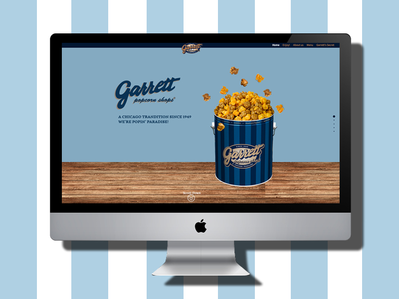

-
양지연개인 포트폴리오 홈페이지나를 표현하는 홈페이지인 만큼 제 취향에 맞게 디자인은 깔끔하고 심플하게 표현하였으며 다소 심심할 수 있는 홈페이지 분위기를 고려하여 애니메이션과 댓글창을 이용하여 동적인 모습을 연출하려 하였습니다.
-

양지연크리스피크림도넛 리뉴얼기존 크리스피크림도넛 홈페이지는 디자인이 촌스럽고 복잡하다고 느껴졌습니다. 또한 사용자들이 이용하기에 불편한점이 있다고 생각해 그점을 보완하기 위하여 리뉴얼을 했습니다.기존 홈페이지보다 깔끔하게 제작하려 하였으며, RWD로 제작함으로써 접근성을 높일 수 있도록 하였습니다.
-

이혜준PlayStation4 홈페이지 리뉴얼기존 홈페이지는 PlayStation4단독 홈페이지가 없어서 전체 홈페이지에서 찾아서 봐야하는 불편함이 있었습니다. 그래서 PlayStation4홈페이지를 onepage형태로 리뉴얼 해보았습니다. 롱스크롤을 활용하여 스크롤 다운만 하면 모든 내용을 확인할 수 있기에 방문자들이 보다 편하게 이용할 수 있는 장점을 가지고 있습니다.
-

이혜준바슈롬 홈페이지 리뉴얼바슈롬 홈페이지는 2012년에 리뉴얼되어 낡은 ui를 가지고 있었습니다. 기존의 홈페이지는 웹에만 반응하는 홈페이지였기 때문에 사용자의 편의성을 위해 반응형 홈페이지로 제작하였습니다. 주 컨텐츠는 제품소개,콘텍트렌즈정보,고객센터,회사소개가 있습니다. 이중 제품소개는 제품들을 필터링하여 탭으로 클릭시 해당 목록들이 필터링되어 나오게 됩니다.
-

이수언가렛 팝콘 브랜드 홍보 홈페이지시카고의 명물 가렛 팝콘에 대한 브랜드 소개 웹사이트입니다. 팝콘은 가볍게 즐길수 있는 스낵이지만 가렛팝콘은 시카고 전통수제 팝콘으로서 누구나 즐길 수 있는 간식이라는 이미지와 동시에 고급스러운 이미지를 부각시키려고했습니다. 심플한 풀페이지 레이아웃 구성으로, 가렛의 메인컬러를 사용하여 무게감 있게 잡아주면서 가벼운 컬러와 애니메이션을 이용해 스낵 브랜드로서 발랄하면서도 고급스러운 느낌을 연출했습니다.
-

이수언서브웨이 홈페이지 리뉴얼기존 홈페이지는 플래시를 이용하여 제작되었으며, 메뉴 구성이라든가 디자인이 리뉴얼이 필요하다고 생각하여 만들게 되었습니다. 브랜드 아이덴티티를 살려 컬러 컨셉은 그린계열로 연출하였습니다.기존에 불필요한 서브 메뉴를 하나로 통합하여 탭으로 구성하고, 주문방법이 어렵다고 생각하는 고객을 위하여 컨텐츠를 추가시켰습니다.반응형으로 제작하여 다양한 디바이스에서 접근이 가능하도록 제작하였습니다.
-
유빛나창덕궁 영어 사이트경복궁에 비해 관광객 유치가 떨어지는 창덕궁을 소개하고자 했습니다. 창덕궁이 매력적으로 보일 수 있게끔 이미지를 적절히 활용했고, 특별히 자연과의 조화를 고려하여 지어졌다는 점에 근거하여 자연스러운 색상을 사용했습니다. 기존 사이트의 글씨가 작고 자간이 좁아 가독성이 떨어지는 것을 보완하고자 했고, 바쁜 사용자들이 빠르게 정보를 찾아볼 수 있도록 핵심적인 정보만을 정리하여 담아냈습니다.
-

훈련생아웃백 반응형 사이트기존 사이트가 모바일에서 잘 작동하지 않았고, 데스크탑에서도 고정된 크기를 가지고 있었습니다. 또한 메인의 메뉴 리스트 구성에 일관성이 없고 각 메뉴마다 중복된 컨텐츠가 많아서 사용자가 길을 잃기 쉬웠습니다. 그리고 각 서브페이지는 통일감이 없었습니다. 따라서 반응형으로 제작하면서 중복된 컨텐츠를 정리하여 논리적인 메뉴를 구성하고자 했고, 각 서브페이지의 통일감을 높이기 위해 공통된 레이아웃을 적용하고자 했습니다. 나아가 접근성을 높이기 위해 요소들을 선형적으로 설계했습니다.